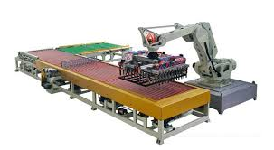

Competitions
2016 - 2017
The challenge
The Challenge (originally known as Road Rules: All Stars, followed by Real World/Road Rules Challenge) is a reality game show on MTV that is spun off from the network's two reality shows, Real World and Road Rules. It features alumni from these two shows, in addition to first-time cast members called 'Fresh Meat', alumni from Are You the One?, and relatives of these cast members called 'Bloodlines', competing against one another for a cash prize.[1][2] The Challenge is currently hosted by T. J. Lavin. The series premiered on June 1, 1998. The title of the show was originally Road Rules: All Stars before it was renamed Real World/Road Rules Challenge by the show's 2nd season, then later abridged to simply The Challenge by the show's 19th season. The series initially used no hosts but instead a former cast member who had been kicked off his or her season, providing assignments as "Mr." or "Ms. Big" (David "Puck" Rainey, David Edwards, and Gladys Sanabria served this role). Later on, however, the series began using hosts: Eric Nies and Mark Long co-hosted a season, and Jonny Moseley and Dave Mirra hosted various seasons before T. J. Lavin became the show's regular host by the 11th season.
Our Robot
A robot needs a power source to drive these actuators. Most robots either have a battery or they plug into the wall. Hydraulic robots also need a pump to pressurize the hydraulic fluid, and pneumatic robots need an air compressor or compressed air tanks. The actuators are all wired to an electrical circuit. The circuit powers electrical motors and solenoids directly, and it activates the hydraulic system by manipulating electrical valves. The valves determine the pressurized fluid's path through the machine. To move a hydraulic leg, for example, the robot's controller would open the valve leading from the fluid pump to a piston cylinder attached to that leg. The pressurized fluid would extend the piston, swiveling the leg forward. Typically, in order to move their segments in two directions, robots use pistons that can push both ways.